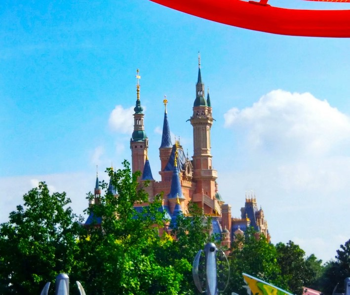
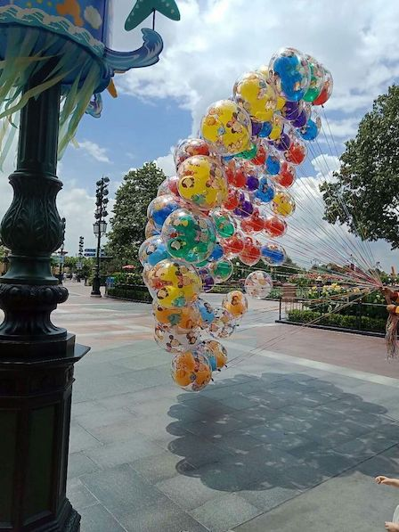
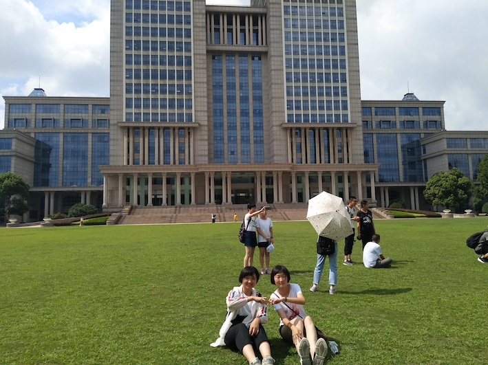
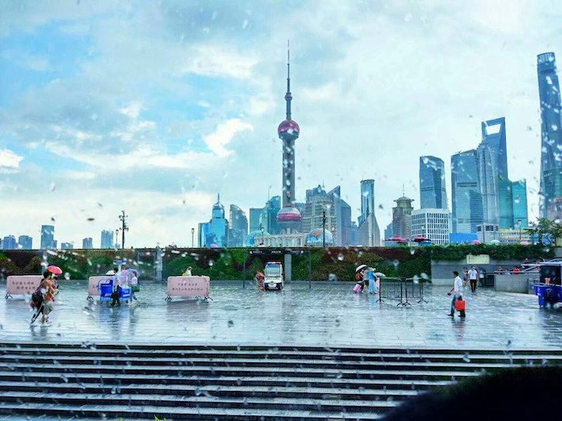
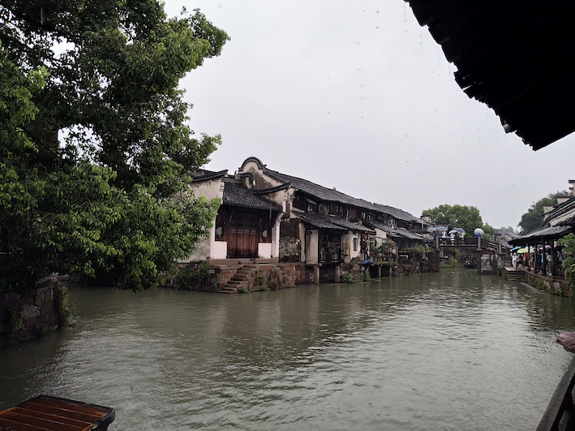
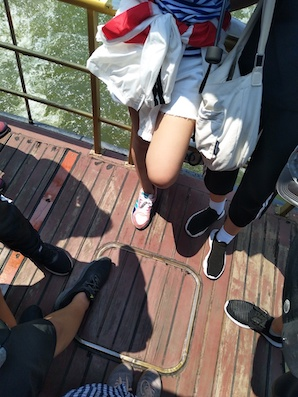
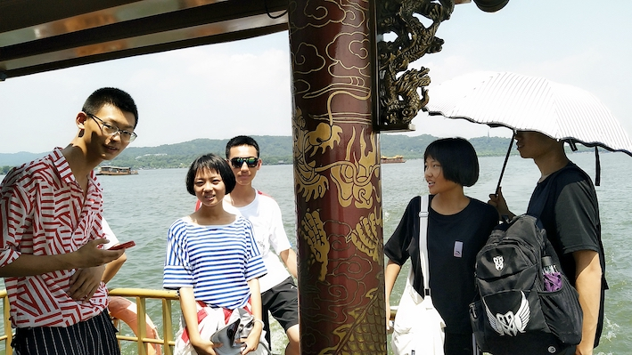
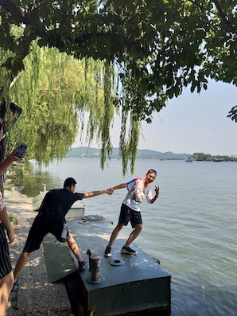

从鄂尔多斯出发去上海，记得当时我们坐了二十几个小时的火车。 同学们差不多占了一整节车厢，乘坐的时间很长却也不觉得无聊，大家在车上吃吃喝喝， 欣赏沿途风景开着玩笑，闲下来就打扑克、狼人杀...没有一点儿赶路的疲惫
我们在同济大学的情人坡合影.
在迪士尼玩了一整天，也是最开心的一天.

| Exciting projects | queue time | Degree of irritation | theme | Number of participants |
|---|---|---|---|---|
| Pirates of the Caribbean | 60 min | *** | Battle for the Sunken Treasure | 38 |
| Tron Lightcycle Power Run | 90 min | ***** | The fastest roller coaster, combined with high technology | 35 |
| Soaring Over the Horizon | 80 min | *** | 5D ball screen movie | 40 |
| Leiming mountain rafting | 60 min | **** | Round whirling rafting, and meet monsters halfway | 45 |
| Marvel Universe | 20 min | * | Marvel Super Heroes | 30 |
印象比较深的是小琴老师指着对面陆家嘴对我们说：你们努力以后去那里工作.


这天刚好下雨，来到乌镇算是领略了一番江南水乡。记得和吴同学坐在沿岸亭子里点了一壶无限续杯的玫瑰茶...

欲把西湖比西子，淡妆浓抹总相宜
第六天上午我们来到了古诗词中的杭州西湖，大家一起乘着船游览，笑声打破了湖面的平静...

在宋城，我们游览了怪街、电影馆、鬼屋时候，还去欣赏了宋城千古情表演，演出分为以下几场：